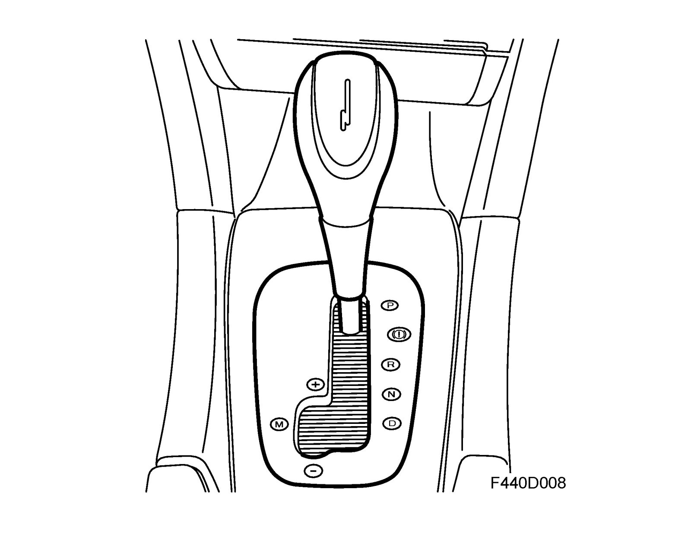
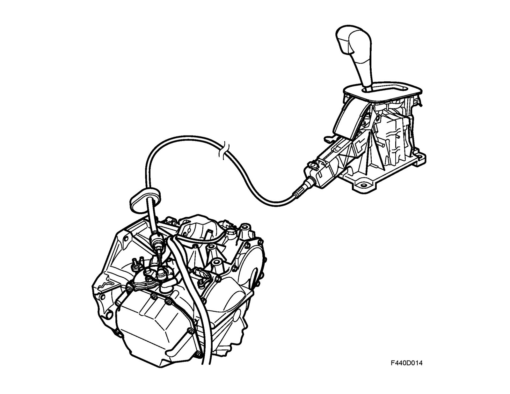
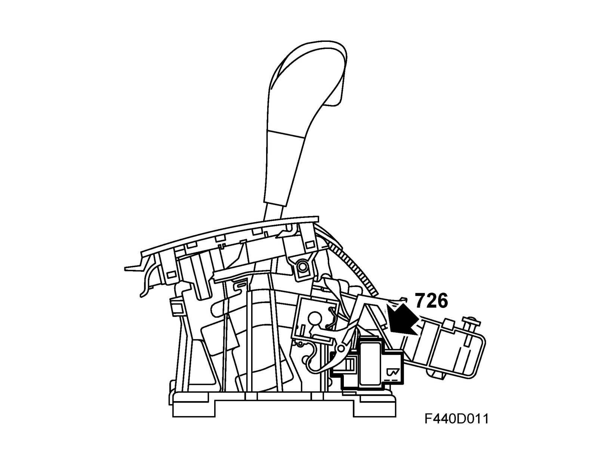
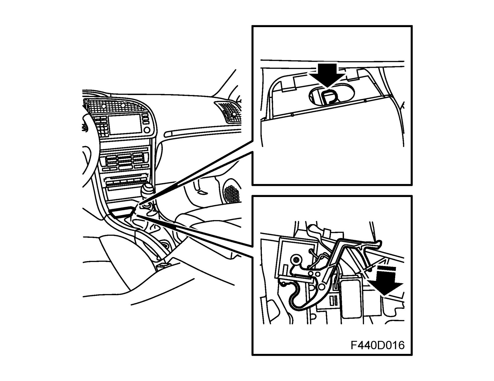

Brief Description, Gear Selector Mechanism
Brief description, gear selector mechanismThe desired gear position (P, R, N, D or M) is engaged with the gear selector. The movement of the gear selector lever is conveyed by a cable to the gear selector position sensor mounted on the transmission casing.

The gear selector position sensor is connected to the manual shifting valve in the valve housing, which is also actuated by the selector lever.

The selector lever housing has the following lock functions: Park Brake Shift Lock and Shiftlock. The Park Brake Shift Lock function requires that the brake pedal is depressed and the ignition key is in the OFF position for the selector lever to be shifted from P or N. The function is governed by SLM which actuates a solenoid. The solenoid mechanically locks the selector lever segment if it is not activated. When the brake pedal is depressed (brake light switch closed), SLM reads the bus message "brake light on" sent by Relay, +15, REC (757R) and then supplies voltage to the solenoid. The solenoid is grounded internally in SLM, which in turn is grounded in point G41, at which time the selector lever can be shifted from P or N.

The gear position interlock function prevents the lever from being moved from P to R, D or M without first pressing the release button in front of the lever. The interlock also prevents the lever from being moved from N to R and from R to P.
Proceed as follows to release Park Brake Shift Lock when there is no power:
Release the solenoid by inserting a screwdriver or the like into the hole in front of the lever housing. This will release the Park Brake Shift Lock.
